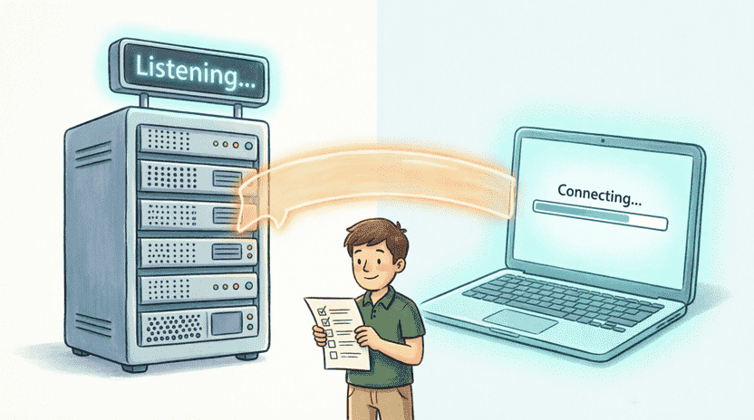
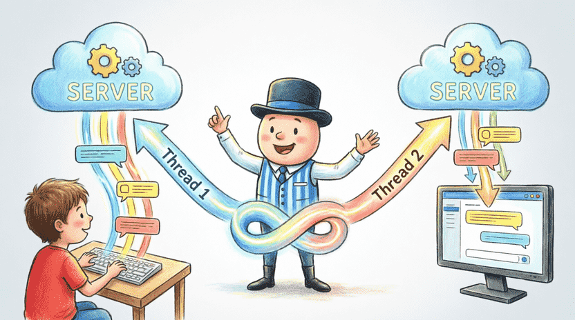
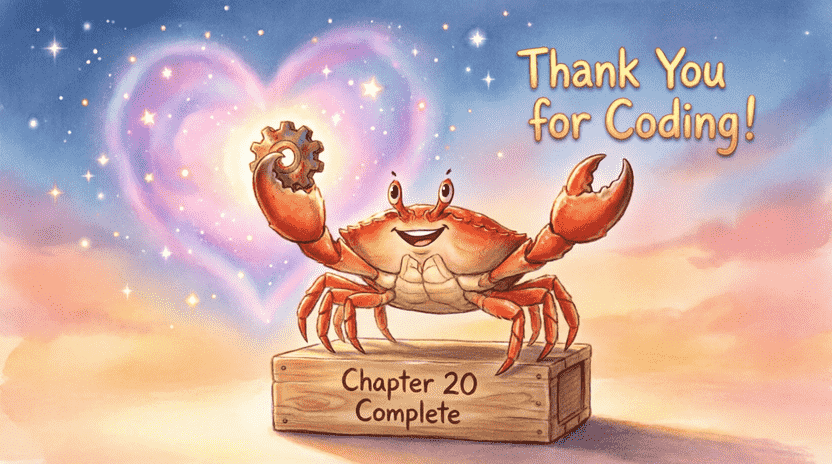
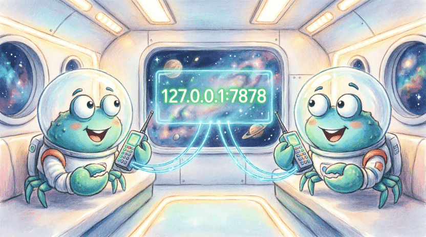
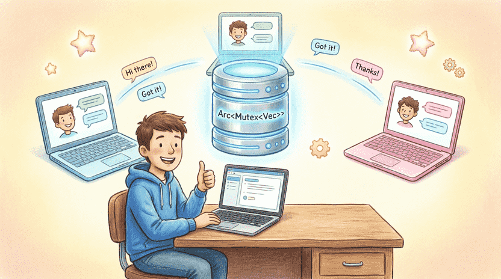

Land of Rust: Ferris the Space Crab’s Adventures
Chapter 20: FerrisNet – The Friends’ Secret Network (Final Network Project)
📑 Chapter Index
20.1. How Can Ferris Talk to His Friend on Another Computer? (Sockets)
20.1.1. Story: Space Telephones
20.1.2. Basic Concepts: IP, Port, Client and Server
20.1.3. The Networking Toolbox: std::net
20.2. Building a Simple Messenger (Ferris Messenger)
20.2.1. Server: Listening on a Port
20.2.2. Client: Connecting and Sending a Message
20.2.3. Exercise: Sending a Reply from the Server
20.3. Improving the Messenger: Two‑Way Chat
20.3.1. The Problem: Taking Turns Is Boring
20.3.2. Using Two Threads to Read and Write
20.4. Final Project: FerrisNet Group Chat
20.4.1. Idea: Broadcasting Messages to Everyone
20.4.2. A Shared List of Guests
20.4.3. Full Group Chat Server Code
20.4.4. Group Chat Client
20.4.5. Challenge: Adding a Username
20.5. Farewell and the Road Ahead
20.5.1. Congratulations! You Are a True Rustacean
20.5.2. Next Steps
20.5.3. Ferris’s Final Words
20.1. How Can Ferris Talk to His Friend on Another Computer? (Sockets)
20.1.1. Story: Space Telephones
Ferris misses his friend Bill, who lives in the spaceship next door. But the metal walls of the ships are too thick – sound cannot pass through them. Ferris has a great idea: “Why not use computers to talk?”
Computers can send data to each other through wires or wireless waves. But how do they know which program the message is for? A web browser? A game? A chat program? That’s where addresses and ports come in! 📡✨
This is your final step toward becoming a computer wizard – building a connection between two computers! 🧙♂️
👨👩👧 Note for parents and teachers
This project combines networking, concurrency, and error handling, making it a great achievement for the end of the book. If the child struggles with the group chat project, you can start with the simple (single client) version first and then move on to the multi‑client version. The official Rust book does not have a dedicated chapter on networking, but thestd::netdocumentation is a good resource:
doc.rust-lang.org/std/net/index.html
20.1.2. Basic Concepts: IP, Port, Client and Server
To understand networking, you only need to know three things:
🔹 IP address: like a house address. Every computer on a network has a unique number. 127.0.0.1 is a special address that always points to “your own computer” (it’s called localhost).
🔹 Port: like an apartment number. A single computer can run several network programs at the same time. Each program listens on a specific port. We will use port 7878.
🔹 Server and Client: The server is like a hotel receptionist – it waits for someone to come. The client is like a guest – it knocks and connects.

20.1.3. The Networking Toolbox: std::net
The good news is that Rust has a ready‑made module called std::net that contains all the necessary networking tools. In this chapter we will use the TCP protocol. TCP is like a reliable phone call: first a connection is established, then messages are sent and received in order, without getting lost. 📞
20.2. Building a Simple Messenger (Ferris Messenger)
20.2.1. Server: Listening on a Port
First, let’s create a new project. Our server will act like a guard standing at the door, waiting for someone to arrive:
use std::io::{Read, Write};
use std::net::TcpListener;
fn main() -> std::io::Result<()> {
// 1. Create a listener on localhost, port 7878
let listener = TcpListener::bind("127.0.0.1:7878")?;
println!("🦀 Ferris server is listening on port 7878...");
// 2. Wait for someone to connect
for stream in listener.incoming() {
let mut stream = stream?;
println!("✅ A client connected!");
// 3. Create an empty buffer (1024 bytes) to read the message
let mut buffer = [0; 1024];
let n = stream.read(&mut buffer)?;
// 4. Convert the bytes to text
let message = String::from_utf8_lossy(&buffer[..n]);
println!("📩 Message received: {}", message);
// 5. Send back a reply
let response = "Got your message! 👋";
stream.write_all(response.as_bytes())?;
}
Ok(())
}🔹 TcpListener::bind creates a listening port.
🔹 listener.incoming() returns an iterator of incoming connections.
🔹 stream.read reads data and write_all sends a reply.
20.2.2. Client: Connecting and Sending a Message
Now let’s create another file called client.rs that acts like the guest knocking on the door:
use std::io::{Read, Write};
use std::net::TcpStream;
fn main() -> std::io::Result<()> {
// 1. Connect to the server
let mut stream = TcpStream::connect("127.0.0.1:7878")?;
println!("🔗 Connected to the server!");
// 2. Send a message
let msg = "Hello Ferris! This is a message from Bill.";
stream.write_all(msg.as_bytes())?;
println!("📤 Message sent: {}", msg);
// 3. Wait for a reply
let mut buffer = [0; 1024];
let n = stream.read(&mut buffer)?;
let response = String::from_utf8_lossy(&buffer[..n]);
println!("📩 Server reply: {}", response);
Ok(())
}If you run the server in one terminal and the client in another terminal, you will see that the messages are successfully exchanged! 🎉
20.2.3. Exercise: Sending a Reply from the Server
Modify the server so that instead of sending a fixed text, it sends back the same client message in uppercase (to_uppercase()).
💡 Hint: Simply change the response line to let response = message.to_uppercase();.

20.3. Improving the Messenger: Two‑Way Chat
20.3.1. The Problem: Taking Turns Is Boring
So far our communication is like a one‑way SMS. Real chat must be two‑way! Both sides must be able to type and see the other person’s messages at the same time.
20.3.2. Using Two Threads to Read and Write
We solve this problem by using two Threads (remember Chapter 16?):
🔸 Thread 1: constantly reads from the user’s keyboard and sends messages to the server.
🔸 Thread 2: constantly reads from the server and prints messages on the screen.
This way nobody has to wait for their turn! ⚡
use std::io::{self, BufRead, BufReader, Write};
use std::net::TcpStream;
use std::thread;
fn main() -> std::io::Result<()> {
let mut stream = TcpStream::connect("127.0.0.1:7878")?;
println!("🔗 Connected to Ferris’s chat room! (type ‘quit’ to exit)");
// Make a clone of the socket for the receiving thread
let mut stream_clone = stream.try_clone()?;
// Receiver thread: listens to the server
let receiver = thread::spawn(move || {
let reader = BufReader::new(&mut stream_clone);
for line in reader.lines() {
match line {
Ok(msg) => println!("📩 {}", msg),
Err(_) => {
println!("❌ Connection to the server was lost.");
break;
}
}
}
});
// Main thread (sender): listens to the keyboard
let stdin = io::stdin();
for line in stdin.lock().lines() {
let line = line?;
if line.trim() == "quit" { break; }
stream.write_all(line.as_bytes())?;
stream.write_all(b"\n")?;
}
receiver.join().unwrap();
println!("👋 Goodbye!");
Ok(())
}📌 stream.try_clone() is very important! Sockets are like keys. Two threads cannot use the same socket at the same time unless you make a copy of it.

20.4. Final Project: FerrisNet Group Chat
20.4.1. Idea: Broadcasting Messages to Everyone
Now we want to build a real chat room where whenever someone connects, their message is sent to everyone else. It’s just like a classroom – when one person speaks, everyone hears them! 🗣️🌍
20.4.2. A Shared List of Guests
The server must keep a list of all connected clients. When a message arrives, the server copies it and sends it to every client on the list.
Because several threads will access this list at the same time, we must use Arc (for sharing ownership) and Mutex (to prevent write conflicts):
#![allow(unused)]
fn main() {
type Clients = Arc<Mutex<Vec<TcpStream>>>;
}This means: “a safe, shared list of sockets”.
20.4.3. Full Group Chat Server Code
use std::io::{BufRead, BufReader, Write};
use std::net::{TcpListener, TcpStream};
use std::sync::{Arc, Mutex};
use std::thread;
type Clients = Arc<Mutex<Vec<TcpStream>>>;
fn main() -> std::io::Result<()> {
let listener = TcpListener::bind("127.0.0.1:7878")?;
println!("🦀 Group chat server is running on port 7878!");
let clients: Clients = Arc::new(Mutex::new(Vec::new()));
for stream in listener.incoming() {
let mut stream = stream?;
println!("✅ A new user connected!");
// Add the client to the list
clients.lock().unwrap().push(stream.try_clone()?);
let clients_clone = Arc::clone(&clients);
// Spawn a new thread for each user
thread::spawn(move || {
handle_client(stream, clients_clone);
});
}
Ok(())
}
fn handle_client(mut stream: TcpStream, clients: Clients) {
let reader = BufReader::new(&mut stream);
for line in reader.lines() {
match line {
Ok(msg) => {
let formatted = format!("[User]: {}\n", msg);
println!("📨 {}", formatted.trim());
// Broadcast the message to everyone
let mut clients_guard = clients.lock().unwrap();
for client in clients_guard.iter_mut() {
// If writing fails, ignore it so the server doesn’t crash
let _ = client.write_all(formatted.as_bytes());
}
}
Err(_) => break, // user disconnected
}
}
println!("❌ A user left the chat.");
}💡 Professional tip: let _ = client.write_all(...) means “if writing fails (for example, that client left), ignore the error and continue”. This is very important for real‑world servers!
20.4.4. Group Chat Client
The client is the same two‑way code from the previous section. To run it, create two separate binary files in a single project or two separate projects. You can define two binaries in Cargo.toml:
[[bin]]
name = "server"
path = "src/server.rs"
[[bin]]
name = "client"
path = "src/client.rs"
Then run cargo run --bin server and cargo run --bin client. Open several terminals, start the server, and run cargo run --bin client multiple times. Now anything you type in one terminal will appear in all the others! 🎊
20.4.5. Challenge: Adding a Username
Right now every message starts with [User]. Can you change the program so that it first asks for a username, and the server shows that username instead?
💡 Hint: The first message the client sends could be its name. The server could read it and use it for all later messages. Or, even simpler, the client could add [username]: to every message before sending it.

20.5. Farewell and the Road Ahead
20.5.1. Congratulations! You Are a True Rustacean
Twenty chapters ago, you didn’t know what fn main() meant. Today, you have built a simple social network, understood concurrency, worked with smart pointers, and applied advanced concepts like Traits and Generics. You are now officially a Rustacean! 🦀🎉
You have gone from a beginner who wrote “Hello World” to a wizard who can connect computers together. That is real power! 🧙✨
🧠 Sometimes things are hard, and that’s okay!
If you run into trouble while running the group chat project (for example, messages don’t reach everyone), don’t worry. Debugging network programs can be a little tricky. Go step by step: first make sure the server and client work on127.0.0.1alone, then move on to multiple clients. Every problem you solve is a big step forward.
20.5.2. Next Steps
Learning Rust does not end here. This is only the beginning! Try these things after the book:
📖 The official Rust book: read “The Rust Programming Language” online (it’s free!).
🧩 Daily exercises: websites like rustlings and exercism are full of small, fun challenges.
🌐 The Rust community: join the official Rust forums or Discord. They are full of kind people who love to help.
🛠️ A personal project: the best way to learn is to build something new! Make a simple game, a command‑line tool, or a small website using a framework like Axum.
⚡ Async programming: learn about async/await and the tokio library to write super‑fast network programs.
20.5.3. Ferris’s Final Words
“My friend, you are amazing! You have mastered the hardest concepts and shown that with a little patience and practice, anything is possible. I, Ferris, am proud of you. Now your spaceship is ready to fly into the far galaxies of programming. 🚀
Remember: the compiler is your friend, not your enemy. Making mistakes means you are learning. The simplest code that works is better than the most complicated code that doesn’t.
Go ahead, code, build, break, and build again. The world of software needs people like you. Goodbye, dear Rustacean. Until the next adventure… 🦀💙”
